1. Определение
Пусть n>1-натуральное число;а-произвольное
Например, число 3 является корнем 4-й степени из числа 81, так как 3^4 = 81. Число −3 также является корнем 4-й степени из числа 81, так как (-3)^4 тоже равно 81. На языке уравнений можно сказать, что
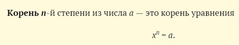Существование
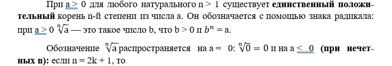
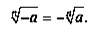
Например
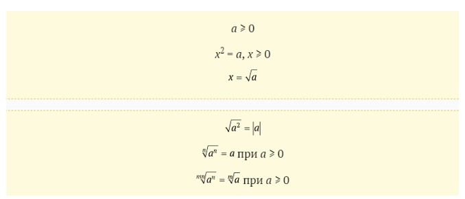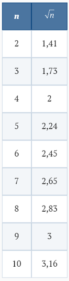
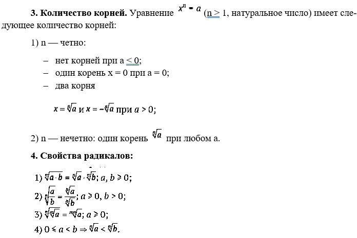
Нахождение корня n-й степени или, как традиционно говорят, извлечение корня n-й степени — это операция, обратная возведению в степень положительного числа:
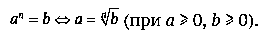
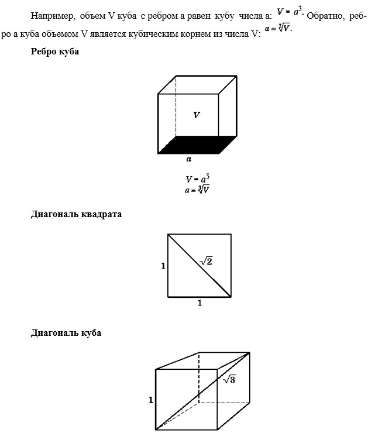
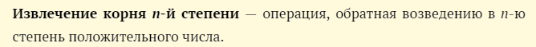
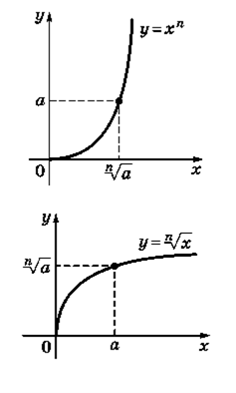
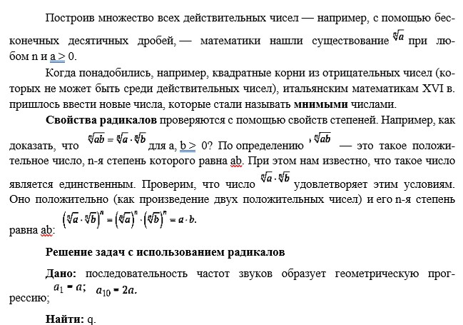

Вопросы и упражнения
1. Какие из следующих чисел являются рациональными:

2. Всегда ли верны равенства

3. Вычислите

4. Какие из чисел больше

5. Упростите выражения